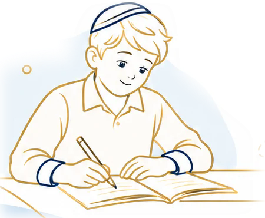

קודם כול, מכירים
מקשיבים לילד ולהורים. נותנים מקום למה שקל, למה שמאתגר ולמה שהילד אוהב.
כי לפני הלמידה, יש ילד.הוראה מתקנת ותיווך למידה מהבית
לפעמים, כל מה שצריך הוא דרך קצת אחרת.
מרחב רגוע ללמידה, מישהו שרואה את הילד,
ואמונה ביכולת שלו להתקדם. צעד אחר צעד.
בקצב שלו. בדרך שלו. עם מקום להיות הוא.

צעדים קטנים.
תחושת מסוגלות גדולה.
הקשבהרואים את הילדמתחילים במה שמיוחד בו
התאמהמוצאים את הדרךמחברים לקצב ולצרכים שלו
צמיחהנותנים מקום להתקדםצעד קטן, ועוד אחד
כל אחד והדרך שלו
בחרו את המקום שלכם — משם נתקדם יחד.
ספרו על הצורך, בחרו תחומי למידה ובדקו את הפרטים.
לטופס ההוריםאתם מביאים את הידע. אנחנו מביאים את התלמידים.
להיכרות ולהצטרפות כמוריםנעים להכיר
לפני המחברת, לפני התרגיל ולפני התשובה הנכונה — יש ילד שרוצה להרגיש שהוא יכול.
הו״מ הוא מקום להסתכל על הלמידה קצת אחרת: להקשיב, לזהות את נקודת ההתחלה, ולפנות מקום לסקרנות ולהצלחות קטנות. הוראה מתקנת ותיווך למידה מהבית, מתוך מחשבה על הילד ועל הדרך שמתאימה לו.
איך הדרך הזו נראית?לכל ילד, נקודת התחלה משלו
לפעמים מתחילים במילה, לפעמים במספר.
תמיד מתחילים במה שהילד צריך.
לתת מקום לחיבור בין האות, הצליל והמשמעות. להכיר את הטקסט בהדרגה, להבין את הסיפור ולגלות את ההנאה שבקריאה.
הדרך שלנו, צעד אחר צעד
אין דרך אחת שמתאימה לכולם.
יש היכרות, הקשבה וצעדים קטנים
שמצטרפים לדרך שלמה.
מקשיבים לילד ולהורים. נותנים מקום למה שקל, למה שמאתגר ולמה שהילד אוהב.
כי לפני הלמידה, יש ילד.מחברים בין הצרכים של הילד למורה ולדרך העבודה המתאימים. בוחרים נקודת התחלה ומטרות קטנות.
מורה מתאים. קצב אישי.משלבים תרגול, סקרנות והתנסות. משאירים מקום לשאלות, לטעויות ולניסיון נוסף.
כל ניסיון הוא עוד צעד.עוצרים לשים לב גם להצלחות הקטנות. מחזקים את מה שעובד וממשיכים משם, עם יותר ביטחון בדרך.
צעדים קטנים שמתחברים להצלחה.מסלול הורים · פנייה אישית
ספרו לנו בכמה מילים מה אתם מחפשים לילד שלכם. זו נקודת ההתחלה לחיבור למורה ולדרך הלמידה שמתאימים לו.
הפנייה מיועדת לבעל האתר בלבד, לצורך היכרות וחזרה אליכם. פרטי ההורים והילדים אינם מוצגים באתר ואינם גלויים לגולשים אחרים.
לאחר פתיחת ההרשמה, הפנייה תאפשר לבדוק התאמה ולתאם את המשך הדרך באופן אישי. כרגע אפשר להתנסות בטופס בלבד.
לצורך ההיכרות הראשונית אין צורך בשם המלא של הילד או בצירוף מסמכים. מספיק לספר לנו מה חשוב לכם.
הטופס כרגע בהכנה
אפשר להתנסות במילוי. השליחה עדיין אינה פעילה, והפרטים אינם נשמרים לאחר רענון העמוד.
אפשר לחזור ולערוך כל פרט. זו תצוגה אישית בלבד.
מצאתם פרט שצריך לשנות? בחרו למטה את החלק שתרצו לערוך.
למורים שרואים מעבר למחברת
יש לכם דרך להגיע לילדים ולעזור להם להתקדם? אנחנו כאן כדי לחבר אתכם לתלמידים שזקוקים למורה כמוכם.
להכיר את מסלול המוריםהוראה מתקנת, קריאה, כתיבה, חשבון והרגלי למידה.
מכירים את תחומי ההוראה, האזור והזמינות שלכם.
אתם מביאים את הדרך המקצועית. אנחנו מחברים לתלמידים.
לפעמים, השינוי הגדול מתחיל
ברגע קטן של ״אני יכול״.
טוב ששאלתם
כמה שאלות שיכולות לעלות
בתחילת הדרך.
גישה ללמידה שנותנת מקום לצרכים האישיים של הילד. עובדים בהדרגה על מיומנויות כמו קריאה, כתיבה וחשבון, תוך התאמה של דרכי ההסבר והתרגול.
אפשר להתחיל גם משאלה או מתחושה שהלמידה דורשת מאמץ גדול. ההיכרות הראשונית מאפשרת לשתף במה שקורה בבית ובמסגרת הלימודים ולחשוב על הצעד הבא.
סביבה רגועה, זמן קצר וקבוע ומקום לשאלות יכולים לעזור ליצור שגרה נעימה. כדאי לשים לב למאמץ ולדרך, ולא רק לתוצאה, ולהתאים את הציפיות לקצב של הילד.
לכל ילד נקודת התחלה, תחומי עניין וקצב משלו. מטרת ההיכרות היא להבין מה עשוי להתאים לו, ולשנות את הדרך לפי מה שעולה לאורך הלמידה.
כל התחלה היא הזדמנות